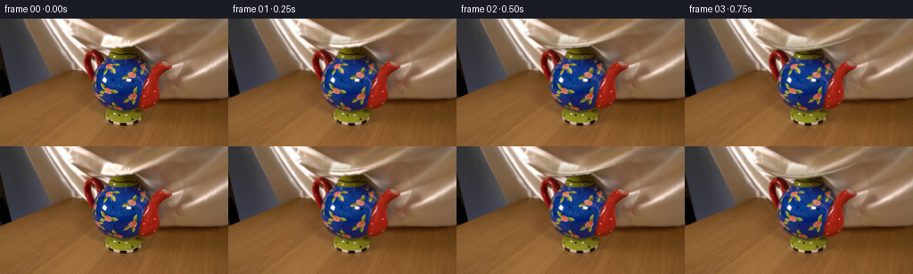
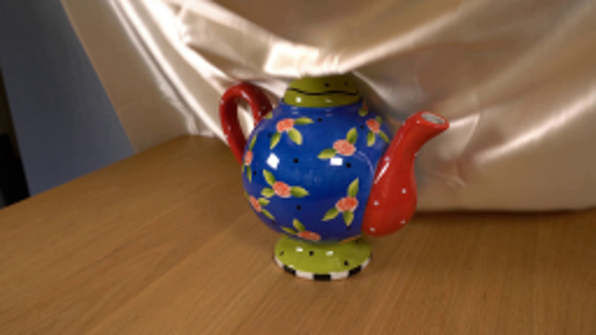
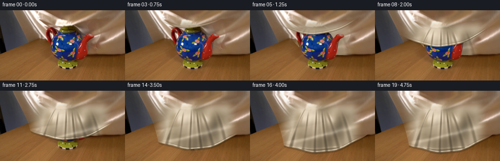
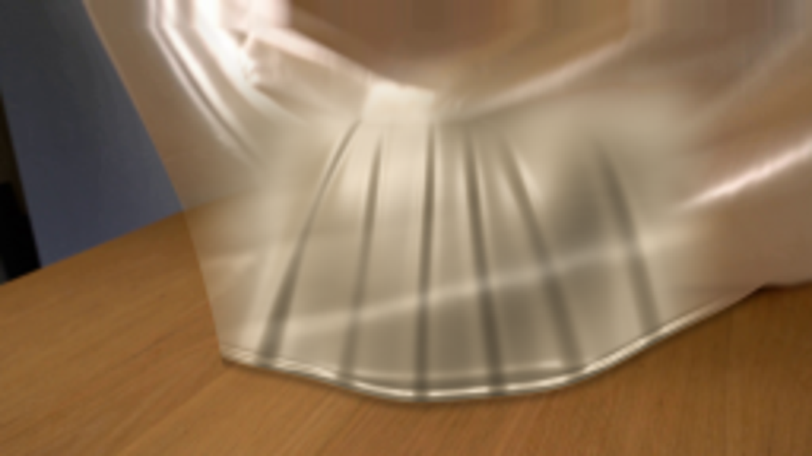

CODING AGENTS AS PIXEL WORLD MODELS
traex/GPT-6.1-Sol · 0159
点击播放 · 原生 RGB 像素
逐轮保存的候选
回放视频、检查图与代码变化。
每份候选均可单独播放。实际图片检查记录在下方工具轨迹中。
候选 01播放与检查图
点击播放 · 原生 RGB 像素


展开代码变化
--- 上一保存版本
+++ 本次保存版本
@@ -0,0 +1,122 @@
+from pathlib import Path
+import numpy as np
+import cv2
+from PIL import Image, ImageDraw
+import artifact_io
+
+ROOT=Path(__file__).resolve().parent
+W,H=256,144
+S=4
+w,h=W*S,H*S
+src=np.array(Image.open(ROOT/'first_frame.png').convert('RGB'))
+base=cv2.resize(src,(w,h),interpolation=cv2.INTER_CUBIC).astype(np.float32)
+y,x=np.mgrid[0:h,0:w].astype(np.float32)/S
+
+def smooth(a,b,z):
+ q=np.clip((z-a)/(b-a),0,1)
+ return q*q*(3-2*q)
+
+def polygon(points):
+ im=Image.new('L',(w,h),0)
+ d=ImageDraw.Draw(im);d.polygon([(int(a*S),int(b*S)) for a,b in points],fill=255)
+ return np.array(im,dtype=np.float32)/255
+
+cloth_original=polygon([(26,0),(30,13),(40,34),(50,48),(59,58),(71,60),(87,62),(102,77),(111,88),(151,91),(191,92),(221,92),(256,90),(256,0)])
+pot=polygon([(96,43),(96,39),(100,35),(106,34),(111,37),(117,44),(120,37),(123,33),(148,31),(154,35),(158,44),(165,49),(171,58),(177,50),(183,48),(192,50),(193,54),(184,59),(181,67),(179,80),(176,90),(171,98),(158,102),(158,112),(154,117),(146,121),(127,121),(119,117),(116,110),(119,103),(108,98),(104,93),(101,84),(101,74),(98,67),(95,55)])
+cloth_original*=1-pot
+rng=np.random.default_rng(53)
+noise=cv2.GaussianBlur(rng.normal(0,1,(h,w)).astype(np.float32),(0,0),.55)
+
+# Satin source patch remains a photographic texture, displaced by the falling sheet.
+def cloth_shading(p,edge):
+ # Topographic displacement of the unsupported fabric and the three contact regions.
+ contact=smooth(.08,.60,p)
+ oval=((x-137)/35)**2+((y-73)/43)**2
+ z=31*np.exp(-1.0*oval**1.45)*contact
+ z+=8.0*np.exp(-((x-105)/12)**2-((y-58)/27)**2)*contact
+ z+=17*np.exp(-((x-178)/15)**2-((y-64)/22)**2)*contact
+ z+=6*np.exp(-((x-137)/16)**2-((y-36)/12)**2)*contact
+ # Folds radiate from the lid, shoulder, handle, and spout. Their widths grow toward the table.
+ q=np.clip((y-38)/85,0,1)
+ folds=[(111,77,3.8,4.0),(121,105,2.6,3.5),(134,130,2.8,2.8),(144,154,3.1,3.0),(154,179,3.6,4.1),(183,206,3.8,4.5)]
+ for j,(a,b,amp,width) in enumerate(folds):
+ curve=a+(b-a)*q**.82
+ curve+=1.3*np.sin(y*.050+j*1.8+p*1.1)*(1-q)
+ wid=width*(.65+.65*q)
+ running=smooth(30+j*2,60+j*1.5,y)
+ z+=amp*(.3+.7*q)*np.exp(-((x-curve)/wid)**2)*running*(.3+.7*contact)
+ z-=amp*.40*np.exp(-((x-curve-wid*1.3)/(wid*.75))**2)*running*contact
+ # Broad loose diagonal satin folds above the rigid object.
+ z+=2.2*np.sin((x*.042+y*.073)+1.2+p*.5)*(1-smooth(25,78,y))
+ # Pooling folds at the advancing lower hem.
+ hem_dist=y-edge
+ z+=1.3*np.exp(-((hem_dist+1.6)/1.35)**2)
+ z-=.50*np.exp(-((hem_dist+3.4)/1.15)**2)
+ final=smooth(.80,1,p)
+ z+=final*1.0*np.exp(-((y-118-2*np.sin(x*.060))/2.0)**2)
+ dy,dx=np.gradient(z,1/S,1/S)
+ nx=-dx*.67;ny=-dy*.58;nz=np.ones_like(nx)
+ den=np.sqrt(nx*nx+ny*ny+1)
+ nx/=den;ny/=den;nz/=den
+ light=np.array([-.48,-.60,.76]);light/=np.linalg.norm(light)
+ dot=np.maximum(0,nx*light[0]+ny*light[1]+nz*light[2])
+ half=light+np.array([0,0,1]);half/=np.linalg.norm(half)
+ highlight=np.maximum(0,nx*half[0]+ny*half[1]+nz*half[2])**18
+ # Sample the unobstructed silk on the right side of the first image.
+ u=199+np.clip((x-58)/3.42,0,55)
+ v=np.clip(y*.73-8*p+2*np.sin((x-130)*.02)*(p),0,86)
+ tex=cv2.remap(src.astype(np.float32),u,v,cv2.INTER_CUBIC,borderMode=cv2.BORDER_REFLECT_101)
+ lum=tex.mean(axis=2)
+ texfine=lum-cv2.GaussianBlur(lum,(0,0),2.5*S)
+ # A warm, opaque, shiny cream silk with soft photographic folds.
+ shade=.56+.46*dot
+ col=np.array([210.,190.,158.])[None,None,:]*shade[...,None]
+ col+=highlight[...,None]*np.array([49,53,61])[None,None,:]
+ col+=(lum-185)[...,None]*.32
+ col+=texfine[...,None]*.24+noise[...,None]*.55
+ # Preserve the original upper/back part of this same piece of silk.
+ # In the centre it transitions smoothly into the new convex drape.
+ dome=smooth(12,43,y)*(1-smooth(205,233,x))*smooth(50,87,x)
+ # photographic texture is vertically advected on free, unsupported portions
+ map_y=(y-8*p*(1-smooth(28,72,y))).astype(np.float32)*S
+ photograph=cv2.remap(base,(x*S).astype(np.float32),np.clip(map_y,0,h-1),cv2.INTER_CUBIC,borderMode=cv2.BORDER_REFLECT_101)
+ # Outside the central synthesized area, extend real satin with a source warp.
+ v2=np.clip(y-34*p*smooth(80,130,y),0,90)
+ right_source=cv2.remap(src.astype(np.float32),np.clip(x,194,255).astype(np.float32),v2.astype(np.float32),cv2.INTER_CUBIC,borderMode=cv2.BORDER_REFLECT_101)
+ ext=smooth(190,230,x)*smooth(70,98,y)
+ photograph=photograph*(1-ext[...,None])+right_source*ext[...,None]
+ return col*dome[...,None]+photograph*(1-dome[...,None])
+
+frames=[src.copy()]
+for i in range(1,20):
+ t=i/4
+ # A gentle hand-lowering at the start, then contact and settling at table level.
+ p=float(smooth(0,4.15,t))
+ # Hem begins just above the lid and descends in a shallow asymmetric curve.
+ early=28-.0042*(x-130)**2 +.8*np.sin(x*.070)
+ late=126-0.0032*(x-135)**2 +1.4*np.sin(x*.046+.4)+.8*np.sin(x*.113)
+ edge=early*(1-p)+late*p
+ # A little damped recoil as the cloth reaches the wooden surface.
+ settle=max(0,t-3.8)
+ if settle:
+ edge+=.75*np.sin(settle*7)*np.exp(-settle*4)
+ left=27+.57*y-.0017*y*y
+ side=smooth(-.5,.5,x-left)
+ front=smooth(-.45,.45,edge-y)*side
+ # Leave old silk visible on the far sides while the centre flows forward.
+ synthesized=cloth_shading(p,edge)
+ bg_change=smooth(0,.28,p)*cloth_original*smooth(82,110,x)*(1-smooth(186,217,x))*smooth(0,24,y)*.90
+ alpha=np.maximum(front,bg_change)
+ # Near the upper border the actual source is kept; this avoids any framing changes.
+ upper=1-smooth(3,24,y)
+ alpha*=1-upper*.20
+ # Drop shadow from the lip on the ceramic until it is fully occluded.
+ shadow=np.exp(-((y-edge-1.5)/1.7)**2)*side*(1-front)*pot*.30
+ # Fabric contact shadow on the wood at the newly advanced edge.
+ shadow+=np.exp(-((y-edge-1.1)/1.9)**2)*side*(1-front)*(1-cloth_original)*(1-pot)*.23*p
+ image=base*(1-shadow[...,None])
+ image=image*(1-alpha[...,None])+synthesized*alpha[...,None]
+ rgb=cv2.resize(np.clip(image,0,255).astype(np.uint8),(W,H),interpolation=cv2.INTER_AREA)
+ frames.append(rgb)
+frames=np.stack(frames).astype(np.uint8)
+artifact_io.save(frames,ROOT)
候选 02播放与检查图
点击播放 · 原生 RGB 像素

展开代码变化
--- 上一保存版本
+++ 本次保存版本
@@ -32,16 +32,17 @@
# Topographic displacement of the unsupported fabric and the three contact regions.
contact=smooth(.08,.60,p)
oval=((x-137)/35)**2+((y-73)/43)**2
- z=31*np.exp(-1.0*oval**1.45)*contact
+ z=43*np.exp(-1.15*oval**1.65)*contact
z+=8.0*np.exp(-((x-105)/12)**2-((y-58)/27)**2)*contact
- z+=17*np.exp(-((x-178)/15)**2-((y-64)/22)**2)*contact
+ z+=24*np.exp(-((x-180)/13)**2-((y-57)/15)**2)*contact
z+=6*np.exp(-((x-137)/16)**2-((y-36)/12)**2)*contact
# Folds radiate from the lid, shoulder, handle, and spout. Their widths grow toward the table.
q=np.clip((y-38)/85,0,1)
- folds=[(111,77,3.8,4.0),(121,105,2.6,3.5),(134,130,2.8,2.8),(144,154,3.1,3.0),(154,179,3.6,4.1),(183,206,3.8,4.5)]
+ folds=[(107,79,2.8,4.8),(120,107,1.9,4.3),(134,130,2.1,3.5),(145,154,2.4,3.8),(155,178,2.8,4.8),(184,207,3.0,5.3)]
for j,(a,b,amp,width) in enumerate(folds):
curve=a+(b-a)*q**.82
- curve+=1.3*np.sin(y*.050+j*1.8+p*1.1)*(1-q)
+ curve+=2.5*np.sin(y*.050+j*1.8+p*1.1)*(1-q)
+ curve+=(1-q)*4*np.sin(q*3.14+j)*contact
wid=width*(.65+.65*q)
running=smooth(30+j*2,60+j*1.5,y)
z+=amp*(.3+.7*q)*np.exp(-((x-curve)/wid)**2)*running*(.3+.7*contact)
@@ -50,8 +51,8 @@
z+=2.2*np.sin((x*.042+y*.073)+1.2+p*.5)*(1-smooth(25,78,y))
# Pooling folds at the advancing lower hem.
hem_dist=y-edge
- z+=1.3*np.exp(-((hem_dist+1.6)/1.35)**2)
- z-=.50*np.exp(-((hem_dist+3.4)/1.15)**2)
+ z+=.65*np.exp(-((hem_dist+1.2)/1.0)**2)
+ z-=.25*np.exp(-((hem_dist+2.7)/1.25)**2)
final=smooth(.80,1,p)
z+=final*1.0*np.exp(-((y-118-2*np.sin(x*.060))/2.0)**2)
dy,dx=np.gradient(z,1/S,1/S)
@@ -64,7 +65,7 @@
highlight=np.maximum(0,nx*half[0]+ny*half[1]+nz*half[2])**18
# Sample the unobstructed silk on the right side of the first image.
u=199+np.clip((x-58)/3.42,0,55)
- v=np.clip(y*.73-8*p+2*np.sin((x-130)*.02)*(p),0,86)
+ v=np.clip(y*.53-8*p+4*np.sin((x-130)*.018)*p,0,75)
tex=cv2.remap(src.astype(np.float32),u,v,cv2.INTER_CUBIC,borderMode=cv2.BORDER_REFLECT_101)
lum=tex.mean(axis=2)
texfine=lum-cv2.GaussianBlur(lum,(0,0),2.5*S)
@@ -72,7 +73,7 @@
shade=.56+.46*dot
col=np.array([210.,190.,158.])[None,None,:]*shade[...,None]
col+=highlight[...,None]*np.array([49,53,61])[None,None,:]
- col+=(lum-185)[...,None]*.32
+ col+=(lum-cv2.GaussianBlur(lum,(0,0),12*S))[...,None]*.18
col+=texfine[...,None]*.24+noise[...,None]*.55
# Preserve the original upper/back part of this same piece of silk.
# In the centre it transitions smoothly into the new convex drape.
候选 03播放与检查图
可观测工具轨迹
实际执行的命令与返回图片。
命令 1exit 0
/bin/bash -lc "cat prompt.txt && printf '\\n---RULES---\\n' && cat GENERATION_RULES.md && printf '\\n---FILES---\\n' && ls -la"
命令 2exit 0
/bin/bash -lc "cat artifact_io.py && python - <<'PY'
from PIL import Image
im=Image.open('first_frame.png');print(im.size);im.resize((1024,576)).save('.tmp/enlarged.png')
PY"命令 3exit 0
/bin/bash -lc "python - <<'PY'
import numpy as np,cv2
print('cv',cv2.__version__)
PY"命令 4exit 0
/bin/bash -lc "cat > generate.py <<'PY'
from pathlib import Path
import numpy as np
import cv2
from PIL import Image, ImageDraw
import artifact_io
ROOT=Path(__file__).resolve().parent
W,H=256,144
S=4
w,h=W*S,H*S
src=np.array(Image.open(ROOT/'first_frame.png').convert('RGB'))
base=cv2.resize(src,(w,h),interpolation=cv2.INTER_CUBIC).astype(np.float32)
y,x=np.mgrid[0:h,0:w].astype(np.float32)/S
def smooth(a,b,z):
q=np.clip((z-a)/(b-a),0,1)
return q*q*(3-2*q)
def polygon(points):
im=Image.new('L',(w,h),0)
d=ImageDraw.Draw(im);d.polygon([(int(a*S),int(b*S)) for a,b in points],fill=255)
return np.array(im,dtype=np.float32)/255
cloth_original=polygon([(26,0),(30,13),(40,34),(50,48),(59,58),(71,60),(87,62),(102,77),(111,88),(151,91),(191,92),(221,92),(256,90),(256,0)])
pot=polygon([(96,43),(96,39),(100,35),(106,34),(111,37),(117,44),(120,37),(123,33),(148,31),(154,35),(158,44),(165,49),(171,58),(177,50),(183,48),(192,50),(193,54),(184,59),(181,67),(179,80),(176,90),(171,98),(158,102),(158,112),(154,117),(146,121),(127,121),(119,117),(116,110),(119,103),(108,98),(104,93),(101,84),(101,74),(98,67),(95,55)])
cloth_original*=1-pot
rng=np.random.default_rng(53)
noise=cv2.GaussianBlur(rng.normal(0,1,(h,w)).astype(np.float32),(0,0),.55)
# Satin source patch remains a photographic texture, displaced by the falling sheet.
def cloth_shading(p,edge):
# Topographic displacement of the unsupported fabric and the three contact regions.
contact=smooth(.08,.60,p)
oval=((x-137)/35)**2+((y-73)/43)**2
z=31*np.exp(-1.0*oval**1.45)*contact
z+=8.0*np.exp(-((x-105)/12)**2-((y-58)/27)**2)*contact
z+=17*np.exp(-((x-178)/15)**2-((y-64)/22)**2)*contact
z+=6*np.exp(-((x-137)/16)**2-((y-36)/12)**2)*contact
# Folds radiate from the lid, shoulder, handle, and spout. Their widths grow toward the table.
q=np.clip((y-38)/85,0,1)
folds=[(111,77,3.8,4.0),(121,105,2.6,3.5),(134,130,2.8,2.8),(144,154,3.1,3.0),(154,179,3.6,4.1),(183,206,3.8,4.5)]
for j,(a,b,amp,width) in enumerate(folds):
curve=a+(b-a)*q**.82
curve+=1.3*np.sin(y*.050+j*1.8+p*1.1)*(1-q)
wid=width*(.65+.65*q)
running=smooth(30+j*2,60+j*1.5,y)
z+=amp*(.3+.7*q)*np.exp(-((x-curve)/wid)**2)*running*(.3+.7*contact)
z-=amp*.40*np.exp(-((x-curve-wid*1.3)/(wid*.75))**2)*running*contact
# Broad loose diagonal satin folds above the rigid object.
z+=2.2*np.sin((x*.042+y*.073)+1.2+p*.5)*(1-smooth(25,78,y))
# Pooling folds at the advancing lower hem.
hem_dist=y-edge
z+=1.3*np.exp(-((hem_dist+1.6)/1.35)**2)
z-=.50*np.exp(-((hem_dist+3.4)/1.15)**2)
final=smooth(.80,1,p)
z+=final*1.0*np.exp(-((y-118-2*np.sin(x*.060))/2.0)**2)
dy,dx=np.gradient(z,1/S,1/S)
nx=-dx*.67;ny=-dy*.58;nz=np.ones_like(nx)
den=np.sqrt(nx*nx+ny*ny+1)
nx/=den;ny/=den;nz/=den
light=np.array([-.48,-.60,.76]);light/=np.linalg.norm(light)
dot=np.maximum(0,nx*light[0]+ny*light[1]+nz*light[2])
half=light+np.array([0,0,1]);half/=np.linalg.norm(half)
highlight=np.maximum(0,nx*half[0]+ny*half[1]+nz*half[2])**18
# Sample the unobstructed silk on the right side of the first image.
u=199+np.clip((x-58)/3.42,0,55)
v=np.clip(y*.73-8*p+2*np.sin((x-130)*.02)*(p),0,86)
tex=cv2.remap(src.astype(np.float32),u,v,cv2.INTER_CUBIC,borderMode=cv2.BORDER_REFLECT_101)
lum=tex.mean(axis=2)
texfine=lum-cv2.GaussianBlur(lum,(0,0),2.5*S)
# A warm, opaque, shiny cream silk with soft photographic folds.
shade=.56+.46*dot
col=np.array([210.,190.,158.])[None,None,:]*shade[...,None]
col+=highlight[...,None]*np.array([49,53,61])[None,None,:]
col+=(lum-185)[...,None]*.32
col+=texfine[...,None]*.24+noise[...,None]*.55
# Preserve the original upper/back part of this same piece of silk.
# In the centre it transitions smoothly into the new convex drape.
dome=smooth(12,43,y)*(1-smooth(205,233,x))*smooth(50,87,x)
# photographic texture is vertically advected on free, unsupported portions
map_y=(y-8*p*(1-smooth(28,72,y))).astype(np.float32)*S
photograph=cv2.remap(base,(x*S).astype(np.float32),np.clip(map_y,0,h-1),cv2.INTER_CUBIC,borderMode=cv2.BORDER_REFLECT_101)
# Outside the central synthesized area, extend real satin with a source warp.
v2=np.clip(y-34*p*smooth(80,130,y),0,90)
right_source=cv2.remap(src.astype(np.float32),np.clip(x,194,255).astype(np.float32),v2.astype(np.float32),cv2.INTER_CUBIC,borderMode=cv2.BORDER_REFLECT_101)
ext=smooth(190,230,x)*smooth(70,98,y)
photograph=photograph*(1-ext[...,None])+right_source*ext[...,None]
return col*dome[...,None]+photograph*(1-dome[...,None])
frames=[src.copy()]
for i in range(1,20):
t=i/4
# A gentle hand-lowering at the start, then contact and settling at table level.
p=float(smooth(0,4.15,t))
# Hem begins just above the lid and descends in a shallow asymmetric curve.
early=28-.0042*(x-130)**2 +.8*np.sin(x*.070)
late=126-0.0032*(x-135)**2 +1.4*np.sin(x*.046+.4)+.8*np.sin(x*.113)
edge=early*(1-p)+late*p
# A little damped recoil as the cloth reaches the wooden surface.
settle=max(0,t-3.8)
if settle:
edge+=.75*np.sin(settle*7)*np.exp(-settle*4)
left=27+.57*y-.0017*y*y
side=smooth(-.5,.5,x-left)
front=smooth(-.45,.45,edge-y)*side
# Leave old silk visible on the far sides while the centre flows forward.
synthesized=cloth_shading(p,edge)
bg_change=smooth(0,.28,p)*cloth_original*smooth(82,110,x)*(1-smooth(186,217,x))*smooth(0,24,y)*.90
alpha=np.maximum(front,bg_change)
# Near the upper border the actual source is kept; this avoids any framing changes.
upper=1-smooth(3,24,y)
alpha*=1-upper*.20
# Drop shadow from the lip on the ceramic until it is fully occluded.
shadow=np.exp(-((y-edge-1.5)/1.7)**2)*side*(1-front)*pot*.30
# Fabric contact shadow on the wood at the newly advanced edge.
shadow+=np.exp(-((y-edge-1.1)/1.9)**2)*side*(1-front)*(1-cloth_original)*(1-pot)*.23*p
image=base*(1-shadow[...,None])
image=image*(1-alpha[...,None])+synthesized*alpha[...,None]
rgb=cv2.resize(np.clip(image,0,255).astype(np.uint8),(W,H),interpolation=cv2.INTER_AREA)
frames.append(rgb)
frames=np.stack(frames).astype(np.uint8)
artifact_io.save(frames,ROOT)
PY
python generate.py"命令 5exit 0
/bin/bash -lc "python - <<'PY'
from PIL import Image
Image.open('frames/19.png').resize((1024,576)).save('.tmp/last.png')
PY"命令 6exit 0
/bin/bash -lc "cp generate.py .tmp/generate_v1.py
python - <<'PY'
p='generate.py'
s=open(p).read().replace('z=31*np.exp(-1.0*oval**1.45)*contact','z=43*np.exp(-1.15*oval**1.65)*contact')
s=s.replace('z+=17*np.exp(-((x-178)/15)**2-((y-64)/22)**2)*contact','z+=24*np.exp(-((x-180)/13)**2-((y-57)/15)**2)*contact')
s=s.replace(\"folds=[(111,77,3.8,4.0),(121,105,2.6,3.5),(134,130,2.8,2.8),(144,154,3.1,3.0),(154,179,3.6,4.1),(183,206,3.8,4.5)]\",\"folds=[(107,79,2.8,4.8),(120,107,1.9,4.3),(134,130,2.1,3.5),(145,154,2.4,3.8),(155,178,2.8,4.8),(184,207,3.0,5.3)]\")
s=s.replace('curve+=1.3*np.sin(y*.050+j*1.8+p*1.1)*(1-q)','curve+=2.5*np.sin(y*.050+j*1.8+p*1.1)*(1-q)\\n curve+=(1-q)*4*np.sin(q*3.14+j)*contact')
s=s.replace('v=np.clip(y*.73-8*p+2*np.sin((x-130)*.02)*(p),0,86)','v=np.clip(y*.53-8*p+4*np.sin((x-130)*.018)*p,0,75)')
s=s.replace('col+=(lum-185)[...,None]*.32','col+=(lum-cv2.GaussianBlur(lum,(0,0),12*S))[...,None]*.18')
s=s.replace('z+=1.3*np.exp(-((hem_dist+1.6)/1.35)**2)','z+=.65*np.exp(-((hem_dist+1.2)/1.0)**2)')
s=s.replace('z-=.50*np.exp(-((hem_dist+3.4)/1.15)**2)','z-=.25*np.exp(-((hem_dist+2.7)/1.25)**2)')
open(p,'w').write(s)
PY
python generate.py"命令 7exit 0
/bin/bash -lc "python - <<'PY'
from PIL import Image
import numpy as np
from pathlib import Path
f=np.stack([np.array(Image.open(f'frames/{i:02d}.png')) for i in range(20)])
assert f.shape==(20,144,256,3) and f.dtype==np.uint8
assert np.array_equal(f[0],np.array(Image.open('first_frame.png')))
print('Validated: 20 RGB frames, 256x144; frame 00 identical to source.')
print('Output:',*[p.name for p in Path('.').glob('*') if p.name in ['pixels.npz','index.html','generate.py']],sep='\\n')
PY"视觉工具实际返回图片 1

视觉工具实际返回图片 2

视觉工具实际返回图片 3

视觉工具实际返回图片 4

保存候选 3 份；完成命令 7 次；可验证图片返回 4 张。原始 API 响应与完整日志保留在本地。